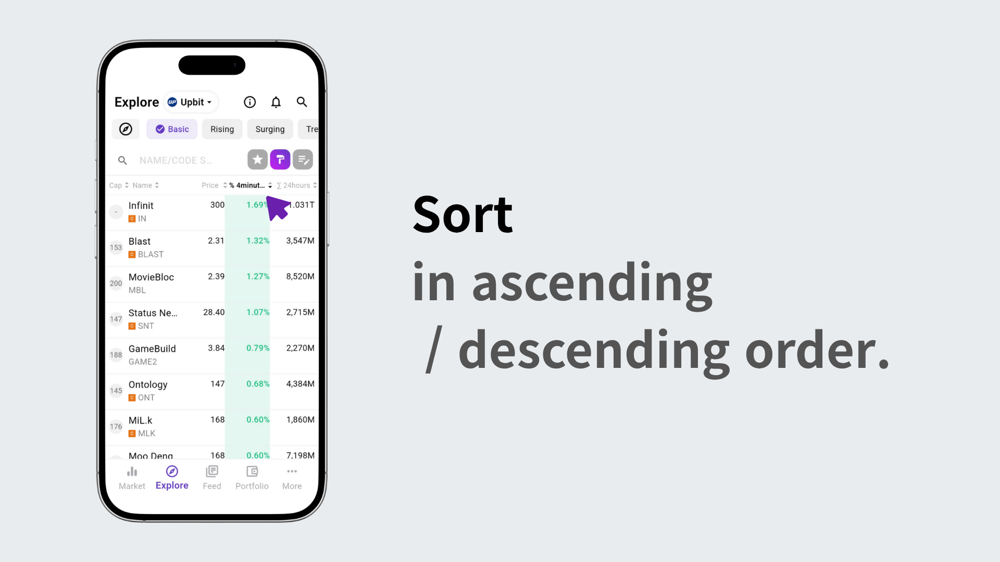

Scroll down to view the declining coins section.
Tap the time tabs to see the coins with the biggest drops for each time frame.
Tap “More” to move to the Explore tab with the same settings.
In the Explore tab, tap the paint icon to highlight or exclude coins by color.
Tap the edit icon to enter edit mode, then select the Change Rate item.

In the Change Rate menu’s advanced settings, choose your desired time period.
In the Advanced Settings tab, adjust the time slider as needed.

You can also explore using your own custom conditions.
Once done, tap the check icon to save your settings.
You can now view coins ranked from the top gainers to the biggest decliners over the selected period.
